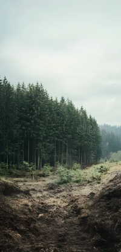
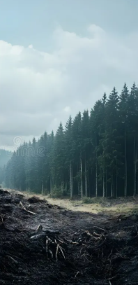
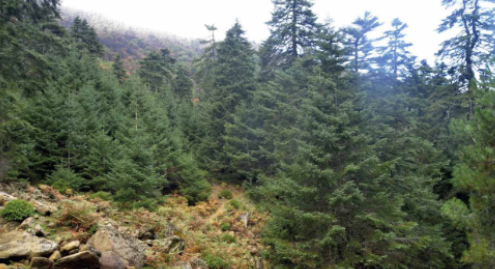
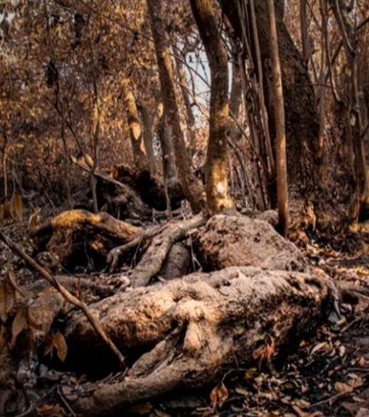
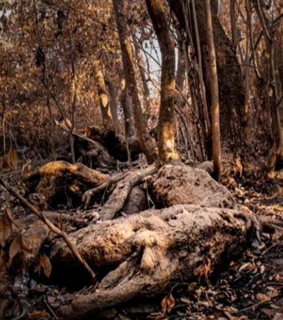
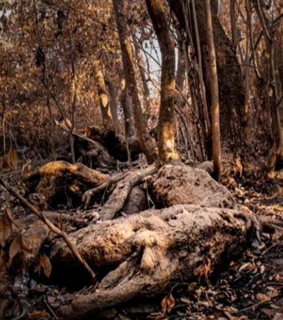
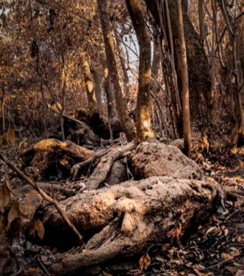

 


Regeneration is more than restoration, it's a blueprint for a thriving future.
Regenerative culture focuses on healing ecosystems, empowering communities, and rebuilding the natural harmony between people and the land. It is an approach rooted in cooperation, restoration, and long-term balance.

We rebuild soil health through microbial life restoration and natural processes.
People are at the heart of regeneration. We train and empower local communities.
Native trees, biodiversity corridors, and natural succession help forests heal.
We restore degraded forests and urban green spaces with native trees, creating habitats for wildlife and improving local ecosystems.
We prevent erosion, restore riverbanks, and improve soil health to support thriving forests and resilient landscapes.
Local communities are our partners. We organize workshops, volunteer programs, and training sessions to empower people.
We run environmental education programs for schools and communities, spreading knowledge about the importance of trees and biodiversity.
We track forest growth and biodiversity, using data to improve our projects and ensure long-term ecological impact.
We combine reforestation with sustainable agriculture, creating income opportunities without harming the environment.